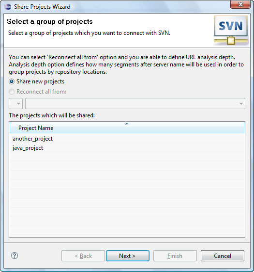
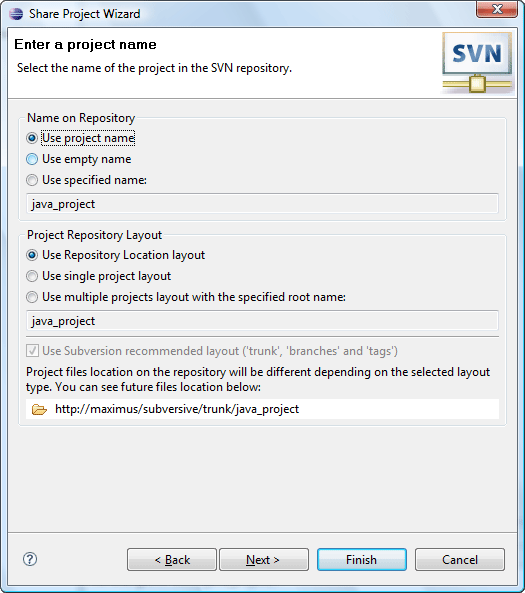
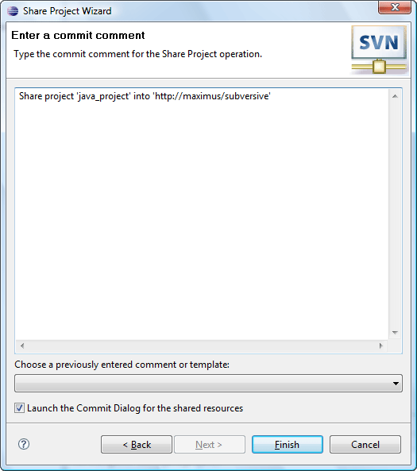
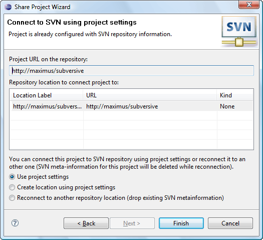

|
|
|
'SVN Sharing Wizard' provides a probability to configure sharing settings. Appears when 'Team>Share Project...', 'Team>Share Projects...' menu items are clicked or while auto sharing import.
The first page of this wizard allows you to choose the type of repository you would like to share you project with. (SVN in our instance). If the user activated sharing with 'Share Projects...' menu item this page will be the second one and the first one will be the page that allows to view projects group to share.
The second page of the wizard allows to choose a repository location to share to or to create a new one.

The next page of 'Sharing Wizard' offers the user to choose repository name and project repository layout with preview.
And the last page of this wizard will provide the user the editable space to enter his comments there or to choose some from templates.
| Option | Description | Default |
| Launch the commit dialog for selected resources | Specifies if the Subversion® should commit the shared resources to the repository location at once while the user can continue his work. | Enabled |
If the project the user wants to share has the SVN® meta information the following window appears to help the user to share the project using existent information.
